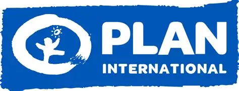
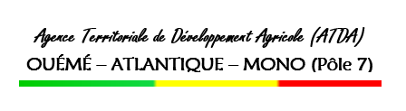
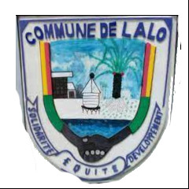
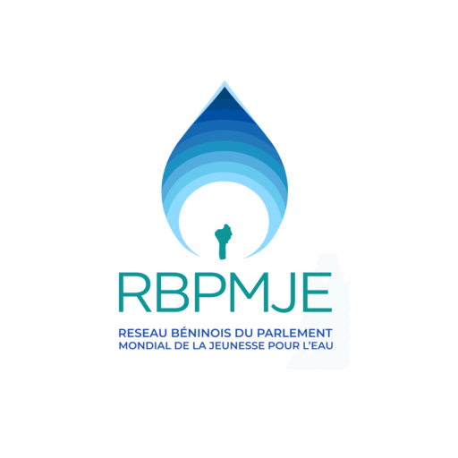
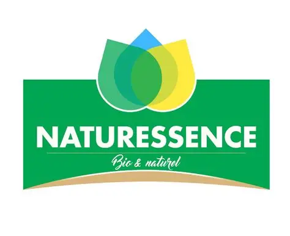
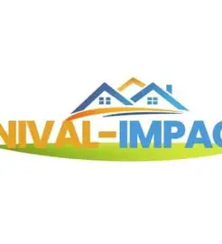
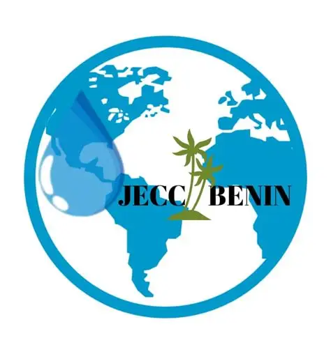

Protection de l'environnement et action climatique
Sensibilisation aux enjeux climatiques et solutions locales favorisant la résilience des communautés face aux changements environnementaux.
Africa Soutiens agit aux côtés des femmes, des jeunes, des communautés et des institutions pour construire un avenir plus inclusif, résilient et durable.
Nous combinons sensibilisation, plaidoyer, renforcement de capacités et accompagnement communautaire pour un impact mesurable.
Africa Soutiens est une Organisation Non Gouvernementale béninoise engagée dans la promotion du développement durable, de l'inclusion sociale et de la participation citoyenne. À travers ses actions de sensibilisation, de plaidoyer, de renforcement des capacités et d'accompagnement communautaire, l'organisation œuvre pour l'autonomisation des femmes, l'épanouissement des jeunes, la protection des groupes vulnérables et la résilience des communautés face aux défis sociaux et climatiques.
Nous croyons au pouvoir de l'entraide et de l'action collective.
Chaque personne mérite sa place dans le processus de développement.
Nous agissons avec intégrité, rigueur et transparence.
Nous développons des réponses adaptées aux réalités locales.
Sensibilisation aux enjeux climatiques et solutions locales favorisant la résilience des communautés face aux changements environnementaux.
Leadership féminin, autonomisation économique et renforcement des compétences des femmes rurales.
Appui aux jeunes dans le développement de compétences, l'engagement communautaire et l'insertion socio-professionnelle.
Soutien aux personnes en situation de vulnérabilité pour une société plus juste et plus inclusive.
Sensibilisation aux bonnes pratiques d'hygiène et à la gestion durable des ressources en eau.
Programme dédié au leadership féminin, à l'autonomisation économique des femmes et à la résilience climatique.
Programme consacré au renforcement des capacités, à l'employabilité, à l'engagement citoyen et au leadership des jeunes.
Programme axé sur les droits humains, l'inclusion sociale, la protection de l'enfance et l'accompagnement des groupes vulnérables.

Autonomisation des femmes rurales de la commune de Zè à travers les activités agricoles durables et la création de revenus.

Formations aux pratiques de gestion, au leadership, à la résilience climatique et à l'entrepreneuriat local.

Appui aux groupes vulnérables, sensibilisation aux droits et renforcement des capacités d'acteurs communautaires.
Chargement des actualités…
Accédez aux rapports d'activités, bilans de projets et synthèses de performance.
Demander les documentsPartage des statuts, actes institutionnels et informations utiles à la gouvernance.
Recevoir les piècesImages, visuels, dossiers de presse et ressources pour partenaires et médias.
Voir le catalogue
Plan International
ATDA
Mairie de Lalo
RB/PMJE
Naturessence
Nivale Impact
OJECC-BéninVotre don contribue directement à nos actions auprès des communautés et au développement de projets durables. Vous souhaitez aussi collaborer avec nous ? Notre équipe est à votre écoute.